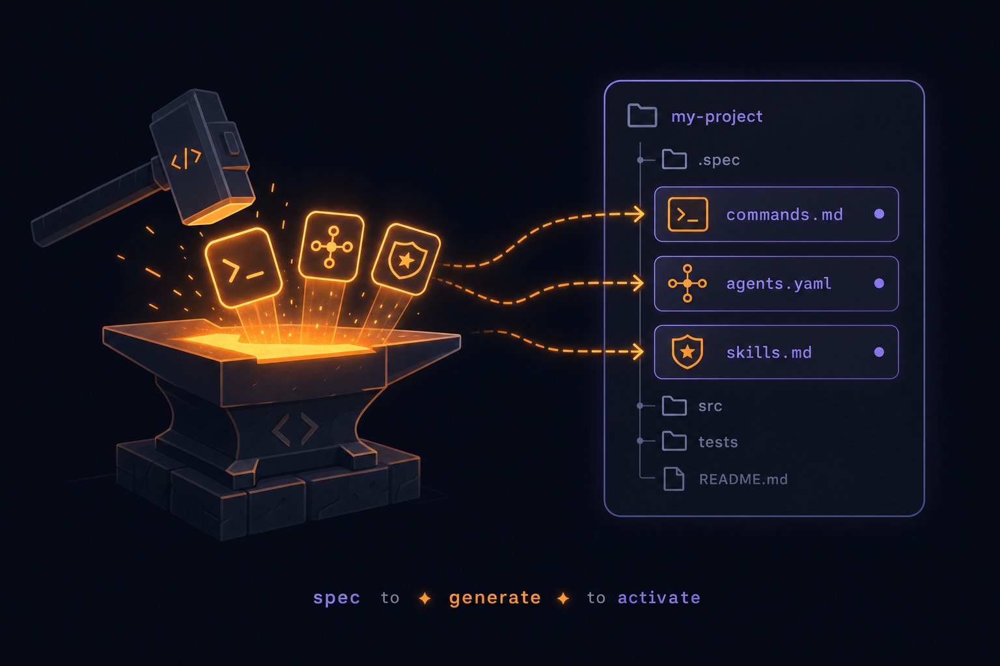
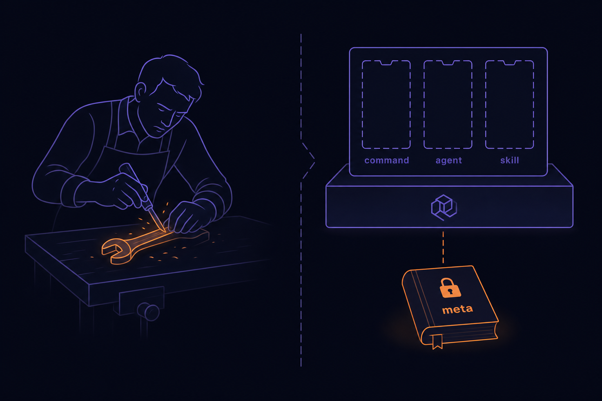
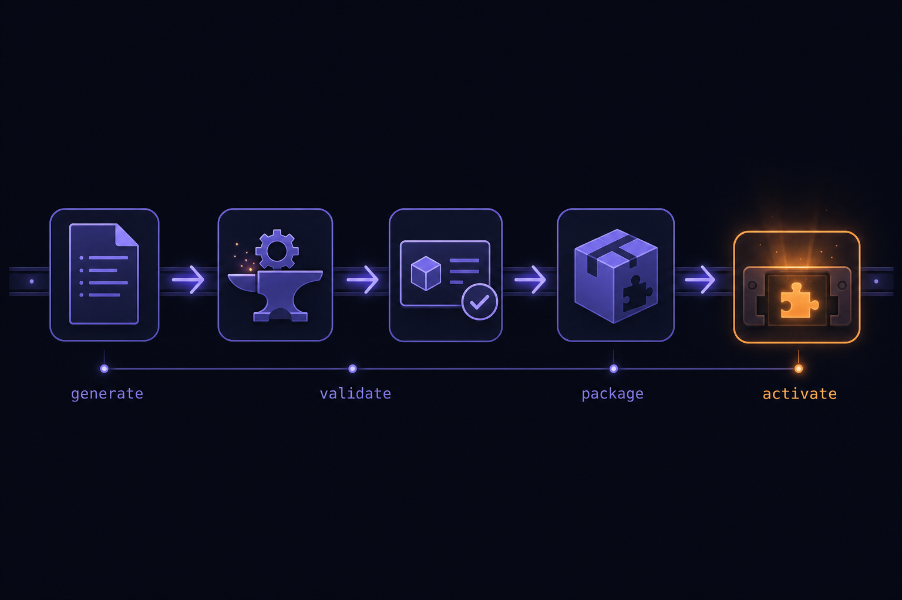
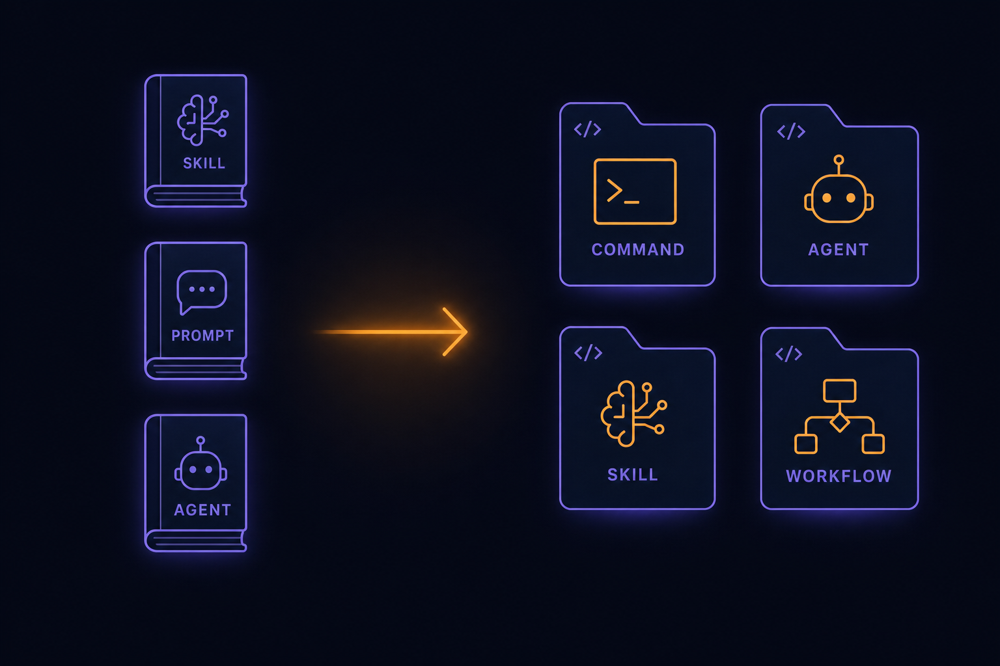
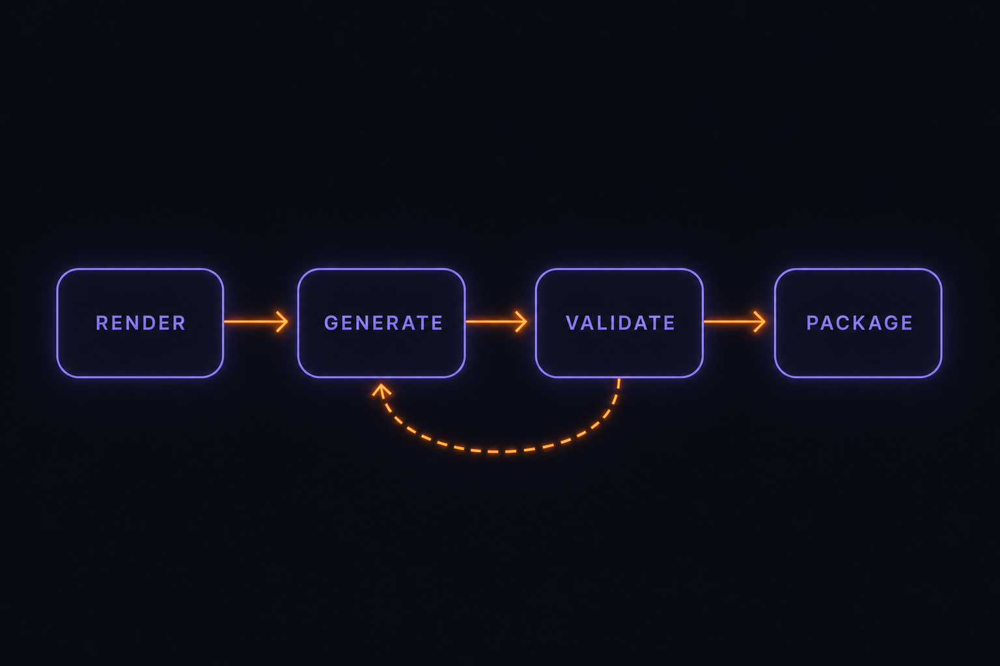
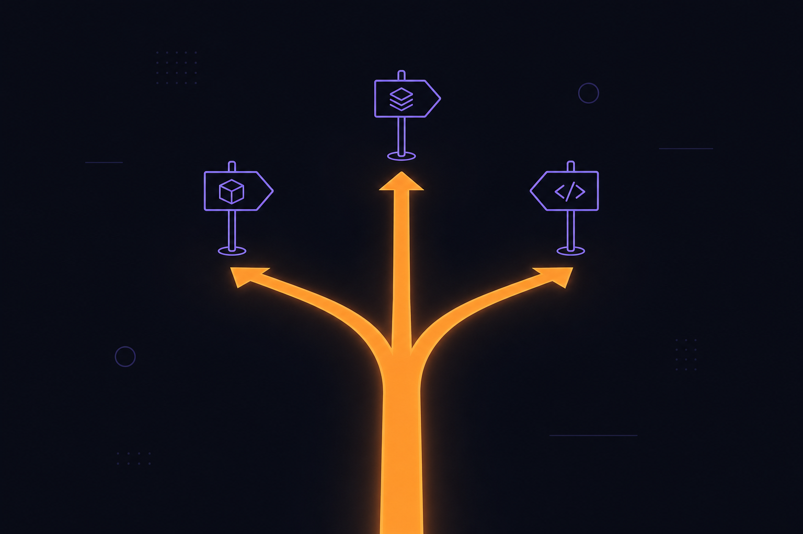
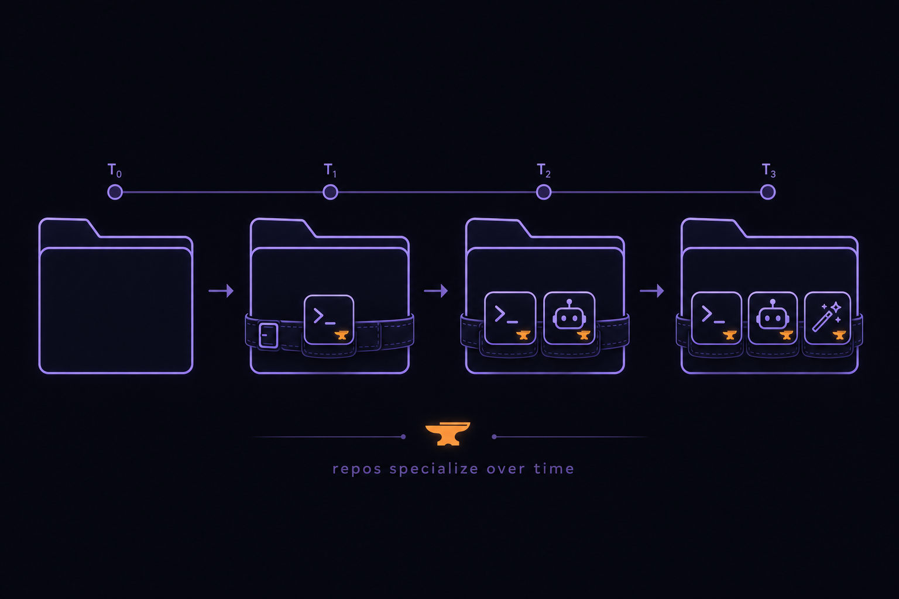

Plan: The Forge — Meta-Artifact Generation for Specialized Repos
Fold the meta-properties generators (meta-skill, meta-prompt, meta-agent) into repo_builder so the platform can author the plugins, commands, agents, and skills a project needs — and activate them per repo. Open identity, closed contract — the same doctrine, one level up.

Purpose
/data/1.Projects/meta-properties/ is a curated workshop of meta-artifacts: a meta-skill that authors Agent Skills (creating-new-skills), a meta-prompt that authors slash commands (slash-command-generator / meta-prompt), and a meta-agent that authors sub-agents (subagent-generator / meta-agent). Its founding doctrine — "collected technique becomes a template; a template that earns its keep becomes a skill or agent", with one artifact = one folder and inputs/outputs as contracts — is the same open-identity / closed-contract seam repo_builder already runs for harnesses and plugins.
This plan incorporates that workshop into the platform as a first-class generation subsystem — RepoBuilder.Forge — so that when a target repo becomes specialized, the platform can generate the exact tooling it needs (a stack-correct /command, a domain sub-agent, a skill, a workflow), package it as a valid agentic.plugin/1, and activate it for that project only. The meta-artifacts stop being a static reference and become the platform's generation method, driven through the very harness-session machinery the platform exists to run.
Problem
The plugin system can already distribute and activate tooling per project, but every plugin must be hand-authored. As project directories specialize (a Phoenix app, a Rust CLI, a data pipeline), each accrues a long tail of bespoke commands/agents/skills that nobody has time to write by hand, and the knowledge for how to write them well lives in a separate repo (meta-properties) that the platform can't reach. Three concrete gaps:
- No generator path.
Plugins.Installerconsumes packages; nothing produces them. The meta-artifacts that know how to produce them are out-of-tree. - Skills aren't a contribution kind. The closed set is
command_pack · workflow_type · agent_template · context_fragment · capability · harness_adapter · mcp_tools. The meta-skill's whole output — an Agent Skill (.claude/skills/<name>/SKILL.md) — has nowhere to land. - Specialization is manual. A
Projectcarries a detected stack + capability map, but turning that context into generated, stack-correct tooling is a human step today.

Solution
Add a thin, typed RepoBuilder.Forge subsystem that treats generating a plugin as just another deterministic ADW — exactly what the platform already does best. The meta-artifact bodies become generator prompt templates; the platform drives a real harness session to produce the artifact; a validator + packager turn the output into an agentic.plugin/1 package; and the existing install → activate-per-project lifecycle does the rest.
Three properties make this a small change rather than a new platform:
- It dogfoods the core. Generation is a harness session under the WorkflowEngine — the same path agents already run. No new execution engine.
- It lands on the existing seam. Output is a normal plugin;
Installer/Activation/Resolverare unchanged except for one deliberate new kind. - One honest core edit. Adding
:skillto the closedContributionset is the single new extension point — the doctrine's sanctioned "adding a kind is a deliberate core edit."

Relevant Files
Existing Files
- existing
lib/repo_builder/plugins/contribution.ex— closed kind set; the one deliberate edit adds:skill(Phase 4). - existing
lib/repo_builder/plugins/manifest.ex—agentic.plugin/1wire→domain parser; the Packager emits manifests this must accept. - existing
lib/repo_builder/plugins.ex— only Repo caller for plugins/activation; Forge callsInstaller.install+activate/2through it. - existing
lib/repo_builder/plugins/installer.ex— install/uninstall; consumes the Packager's output dir. - existing
lib/repo_builder/plugins/activation.ex— per-project effective set; must learn the new:skillkind. - existing
lib/repo_builder/plugins/source/—LocalLibraryreadsplugin_library/; the Forge writes there, so installs flow unchanged. - existing
lib/repo_builder/commands/resolver.ex+commands/pack.ex— thecommand_packprecedence layer; model for the newSkillPackresolver. - existing
lib/repo_builder/workflow_engine.ex,workflow_engine/{runner,step,catalog}.ex— the deterministic engine + workflow-type catalog the forge ADW registers into. - existing
lib/repo_builder/session/server.ex— the harness session the generate step drives (scratch cwd, redaction, idle timeout). - existing
lib/repo_builder/projects/{project,profiler,context_primer}.ex— supplies stack + capability context that conditions the generator prompt. - existing
lib/repo_builder/plans.ex+plans/plan.ex— durable artifact pattern to mirror forforge_artifacts. - existing
lib/repo_builder_web/live/{plugins_live,planning_live,projects_live}.ex— UI patterns;/forgefollows them;/pluginsgains a "Forge a plugin" entry. - existing
ai_docs/plugin-authoring.md,ai_docs/agentic-layer-adaptor.md,ai_docs/prompt-anatomy.md— the doctrine the vendored generators must align with. - existing
plugin_library/+priv/command_packs/— output target + capability-token convention the generators must honor. - existing
config/config.exs—:plugins+:harnessesconfig; add a:forgeblock (generator dir, generation harness, scratch base).
New Files
- new
ai_docs/meta-artifacts.md— vendored doctrine + the generator catalog; the conditional-docs router gets a row. - new
priv/forge/generators/{command,agent,skill,workflow}.md— the meta-artifact bodies, re-cast as repo-aware generation prompts (capability tokens, typed-standard, naming rules). - new
lib/repo_builder/forge.ex— the typed context; the only Repo caller forforge_artifacts; public APIrequest/1,get/1,list_for_project/1. - new
lib/repo_builder/forge/artifact.ex— Ecto schemaforge_artifacts(project_id, kind, spec, status, output_path, plugin_id, workflow_run_id). - new
lib/repo_builder/forge/generator.ex— closed generator registry:kind → {prompt_template_path, validator, packager_hint}; mirrors the Harness registry seam. - new
lib/repo_builder/forge/validator.ex— per-kind structural checks (third-person description, gerund/kebab name, <500-line body, valid frontmatter); never raises. - new
lib/repo_builder/forge/packager.ex— validated artifact(s) →plugin_library/<id>/with a synthesizedplugin.json+ checksum. - new
priv/workflows/forge.json(orlib/repo_builder/workflows/forge.ex) — theforgeworkflow_type:render → generate → validate → packagewith a validate→generate retry edge. - new
lib/repo_builder/plugins/skill_pack.ex— resolver/loader for the new:skillkind (writes/links.claude/skills/for the active project). - new
priv/repo/migrations/*_create_forge_artifacts.exs— binary_id table. - new
lib/repo_builder_web/live/forge_live.ex+ route/forge— pick project → kind → spec → preview → generate → review → activate. - new
plugin_library/forge-meta/— a bundled "meta" plugin packaging the generators as acontext_fragment+ sample, proving the loop end-to-end. - new
test/repo_builder/forge/*_test.exs+test/repo_builder_web/live/forge_live_test.exs— driven through theFakeharness.
Implementation Phases
IMPORTANT: Execute every phase and task step by step, in order, top to bottom. Each phase must end green against the five-command gate (compile --warnings-as-errors · format · credo --strict · test · dialyzer) before the next begins.
Status markers: [] idle · [wip] in progress · [x] complete · [f] failed. All start as []; the Build Plan workflow updates them as it works.
[] Phase 1: Vendor the generators & doctrine
Bring the meta-properties know-how in-tree as repo-aware generation prompts, and document the lineage. No runtime behavior yet — this is the prompt/asset foundation everything else renders.

1. Author the generator templates
[]Createpriv/forge/generators/command.mdfrommeta-properties/.../slash-command-generator/PROMPT_TEMPLATE.md— keep the 6-section anatomy, but require capability tokens ({{TEST_COMMAND}},{{SPEC_DIR}}) instead of hard-wired toolchains so output is stack-portable.[]Createpriv/forge/generators/agent.mdfromsubagent-generator/AGENT-strict.md(disciplined 4-section, real frontmatter, minimal inferred tools) — drop the live doc-fetch step (offline/hermetic generation).[]Createpriv/forge/generators/skill.mdfromcreating-new-skills/SKILL.md— distill to the hard rules: gerund/kebab name, third-person description, body <500 lines, progressive disclosure, one capability per skill.[]Createpriv/forge/generators/workflow.md— generate aworkflow_typeJSON matchingWorkflowEngine.Step(edges ∈ sibling|done|abort; harness optional per step).[]Add a{{PROJECT_CONTEXT}}slot to every template, filled at render time fromProjects.ContextPrimer(stack, capabilities, conventions).
2. Document the doctrine & lineage
[]Writeai_docs/meta-artifacts.md: the open-id/closed-contract framing, the generator catalog, and themeta-propertiesprovenance (source repo + sweep date).[]Add a routing row to.claude/commands/conditional_docs.md("Forging tooling / generating plugins →ai_docs/meta-artifacts.md+ai_docs/plugin-authoring.md").[]Add the:forgeconfig block toconfig/config.exs(generators_dir,generation_harness,scratch_base,default_source).
3. Testing Strategy
No code yet — assert the assets exist, are well-formed, and the config reads back. ExUnit + a small fixture check that each generator template contains its required section headers and the {{PROJECT_CONTEXT}} slot.
[]test/repo_builder/forge/generators_present_test.exs— asserts all four templates exist and contain required markers — proves the asset contract.[]mix format --check-formatted && mix credo --strict— proves docs/config edits are clean.
[] Phase 2: Forge context, schema & generator registry
The typed boundary: a durable record of "this project asked for this kind of tool with this spec," plus the closed registry mapping each kind to its template + validator. Pure data + lookups — no generation yet.
1. Schema + migration
[]mix ecto.gen.migration create_forge_artifacts— binary_id PK; cols:project_id(nullable FK,nil=platform),kind :string(validated vs registry),spec :text,statusEcto.Enum[:requested,:generating,:validating,:packaged,:installed,:failed],output_path :string,plugin_id :string,workflow_run_idFK (nullable),error :map.[]Writelib/repo_builder/forge/artifact.exwithuse RepoBuilder.Schema, hand-written@type t, and a typedchangeset/2(validate_inclusion(:kind, Forge.Generator.kinds())).
2. Generator registry (the seam)
[]Writelib/repo_builder/forge/generator.ex: a closed mapkind → %{template:, validator:, contribution_kind:}for:command | :agent | :skill | :workflow;@spec kinds() :: [atom(),...],fetch/1 :: {:ok, map()} | {:error, :unknown_generator}— mirrorsHarness.Registry.[]Map each generator kind to its targetContribution.kind(:command→:command_pack,:agent→:agent_template,:skill→:skill[Phase 4],:workflow→:workflow_type).
3. Context API
[]Writelib/repo_builder/forge.ex— the only Repo caller forforge_artifacts:request/1(insert:requested),get/1,list_for_project/1,mark_status/3. Every public fn@spec'd, tagged-tuple returns.
4. Testing Strategy
Round-trip the schema/Enum/JSONB through the context; assert unknown kinds are rejected at the changeset boundary (not a raw Postgrex error). async: true ExUnit.
[]test/repo_builder/forge_test.exs— request/get/list + status transitions — proves the context contract.[]test/repo_builder/forge/generator_test.exs—fetch/1returns each kind; unknown →{:error, :unknown_generator}— proves the closed seam.[]mix test --warnings-as-errors && mix dialyzer— proves types + specs hold.
[] Phase 3: The forge ADW — generate & validate
Wire generation as a deterministic workflow driven by a real harness session, with a validate→generate retry edge. This is the heart: the meta-artifact prompt drives an agent that writes the artifact into a scratch cwd; the validator gates it.

1. Validator
[]Writelib/repo_builder/forge/validator.ex: per-kind total checks returning:ok | {:error, [reason]}— frontmatter parses (yaml_elixir), name is kebab/gerund, description third-person & ≤1024 chars, skill body <500 lines, workflow edges valid. Never raises.
2. The forge workflow_type
[]Define theforgeworkflow (priv/workflows/forge.jsonor a code module): stepsrender(deterministic prompt fill from generator + ContextPrimer) →generate(harness session, scratch cwd) →validate(Validator) →package.validate.on_failure → generate(bounded retry); terminal failure marks the artifact:failed.[]Register it inWorkflowEngine.CatalogsoForge.request/1can launch it viaWorkflowEngine.start_workflow, threadingproject.cwd+isolation_mode(reuse the planning-wizard launch fix).[]Thegeneratestep must resolve a real harness (refuse no-op/Fake in prod via the same:no_real_harnessguard as PlanningLive), running in an isolated scratch workspace so generation can't stomp the target repo.
3. Capture & persist
[]Ongeneratedone, collect the written file(s) from the scratch cwd; onvalidateok, setforge_artifacts.output_path+ status:validating→:packaged; broadcast progress on the existingconsole:eventsseam.
4. Testing Strategy
Drive the whole ADW through the Fake/Mock harness (registry seam) emitting a canned artifact; assert validate passes for good output and the retry edge fires for bad output. Crash-isolation: a failing generate is contained to its run.
[]test/repo_builder/forge/validator_test.exs— good/bad fixtures per kind — proves gates.[]test/repo_builder/forge/forge_workflow_test.exs— Fake harness writes a valid command; assert:packaged; a malformed run retries then fails cleanly — proves the deterministic edges.[]mix test --warnings-as-errors && mix dialyzer.
[] Phase 4: Package, the :skill kind & activate
Turn validated output into a real plugin and run it through the existing lifecycle — including the single sanctioned core edit that gives skills a home.
1. The one deliberate core edit: :skill kind
[]Add:skillto the closed union +@kindsinlib/repo_builder/plugins/contribution.ex(asset = askills/dir of<name>/SKILL.mdbundles).[]Writelib/repo_builder/plugins/skill_pack.ex+ teachPlugins.Activationthe new kind (materialize/link active skills into the project's.claude/skills/).[]Updateai_docs/plugin-authoring.md+ai_docs/meta-artifacts.mdto document the new kind (keep the contract table complete).
2. Packager
[]Writelib/repo_builder/forge/packager.ex: given validated artifact(s) + generator metadata, synthesize aplugin.json(schema "agentic.plugin/1", kebabid, semverversion, the rightcontributions[],sha256checksum) and write the package intoplugin_library/<id>/— round-trip-verified byPlugins.Manifest.parse/1.
3. Install + activate
[]Forge callsPlugins.Installer.install(:local_library, id, version)thenPlugins.activate(project_id, id); setforge_artifacts→:installed, recordplugin_id.[]Confirm the effective set recompute surfaces the new tooling for that project only (a generated/commandresolves viaCommands.Resolver; a skill appears in.claude/skills/;nilproject = platform-wide).
4. Testing Strategy
End-to-end through Fake: generate → package → install → activate, then assert the contribution is live for the project and absent for others. Verify the plugin.json the Packager writes parses back through the strict manifest boundary.
[]test/repo_builder/forge/packager_test.exs— emitted manifest parses; checksum verifies — proves the wire boundary holds both directions.[]test/repo_builder/plugins/skill_pack_test.exs—:skillactivates per project — proves the new kind.[]mix test --warnings-as-errors && mix dialyzer— full closed-set exhaustiveness still holds.
[] Phase 5: /forge UI & the bundled meta plugin
Close the loop with a human-in-the-loop surface and a bundled sample that proves the whole path with one click.
1. The /forge LiveView
[]Writelib/repo_builder_web/live/forge_live.ex+ route/forge: project picker → kind (command/agent/skill/workflow) → spec textarea → preview rendered prompt + cost/context estimate → generate (live stream via PubSub) → review artifact → activate.[]Add a "Forge a plugin →" affordance toplugins_live.ex; reuseplanning_live.exlaunch/preview patterns (always-render forms, streams for the live event feed).
2. Bundled proof plugin
[]Createplugin_library/forge-meta/: acontext_fragmentteaching the orchestrator about forging + a sample generatedcommand_pack, proving install→activate end-to-end with zero hand-authoring beyond the manifest.[]Add a seed/IEx one-liner demoing: register a project → forge a stack-correct/smoke-testcommand → activate → resolve it.
3. Testing Strategy
Phoenix.LiveViewTest against element IDs; the LiveView is backed by the Fake harness via the registry seam so CI needs no CLI. Assert the generate stream renders and activation reflects in the UI.
[]test/repo_builder_web/live/forge_live_test.exs— drive project→kind→spec→generate→activate; assert#forge-form, stream container, activated badge — proves the surface.[]mix test --warnings-as-errors— full suite green (target: existing 1,110 + new).
Validation Commands
Execute these to validate the entire plan is complete (the project's five-command green gate, plus the end-to-end loop):
[]scripts/pg.sh start— Postgres up for the session (prereq).[]mix compile --warnings-as-errors— no warnings; the new:skillkind compiles exhaustively.[]mix format --check-formatted— canonical style.[]mix credo --strict— every new public fn has an@spec.[]mix test --warnings-as-errors— full suite green, forge path driven by Fake.[]mix dialyzer— success-typing + contract checking; closed-set exhaustiveness intact.[]Manual loop: at/forge, forge a stack-correct command for a registered project, activate it, and confirm it resolves there and nowhere else — proves "specialize specific repos."
[f] and move on if possible.Questionables
Open decisions worth your call before/while building — surfaced rather than silently decided.

Should skills be a new :skill contribution kind, or be smuggled into an existing kind?
Assumption: add the :skill kind (Phase 4). The doctrine explicitly sanctions "adding a kind is a deliberate core edit," and an Agent Skill (SKILL.md bundle) is structurally distinct from a command pack or agent template — folding it into one would blur the closed contract Dialyzer relies on. The cost is one edit to Contribution + Activation + a SkillPack resolver. Alternative (reject): model skills as a sub-dir of agent_template — cheaper but dishonest and harder to resolve.
Generate via a real harness session, or via deterministic templating?
Assumption: real harness session under the WorkflowEngine. It dogfoods the platform's reason to exist and yields genuinely novel, context-fit artifacts; the Validator + retry edge tame non-determinism. A pure-template fallback is cheaper and fully hermetic but can only stamp boilerplate. Recommendation: ship harness-driven, keep a Fake-backed template path for CI/offline (it already exists via the registry seam).
How do the meta-properties generators enter the tree — vendor, git submodule, or remote source?
Assumption: vendor a distilled copy into priv/forge/generators/ (Phase 1) with provenance recorded in ai_docs/meta-artifacts.md. The upstream artifacts are reference-grade and slow-moving, and we must re-cast them to be capability-token aware anyway. A submodule couples build to an external repo; a RemoteStore-style source is overkill for four prompts. Revisit if the generator set grows or upstream churns.
Who may trigger a forge — and where does generated code run?
Assumption: forging declarative artifacts (command/agent/skill/workflow) is operator-gated but unprivileged; forging a harness_adapter (code) inherits the existing code-plugin trust gate (trust.allow_code + checksum + explicit confirm). Generation always runs in an isolated scratch cwd, never the target repo, so a bad generation can't mutate real source. This plan scopes the four declarative kinds; code-bearing forge is follow-on.
Project-scoped vs platform-wide generated tooling by default?
Assumption: default to the requesting project_id (the whole point — "specialize specific repos"). nil project (platform-wide) is an explicit opt-in in the /forge UI, matching the existing nullable-project_id convention.
Notes
Why this is a small change, not a new platform
The platform already owns every hard part: driving harness CLIs deterministically (Session.Server), fixed-shape workflows with retry edges (WorkflowEngine), a closed-contract plugin system with per-project activation (Plugins.*), and stack/capability detection (Projects.*). The Forge is glue: it points the generation prompt at the meta-artifacts, captures the output, validates it, and hands it to the lifecycle that already exists. The only genuinely new contract is the :skill kind.
Mapping: meta-artifact → contribution kind
| meta-properties artifact | produces | repo_builder kind | lands via |
|---|---|---|---|
slash-command-generator (meta-prompt) | .claude/commands/*.md | command_pack existing | Commands.Resolver |
subagent-generator (meta-agent) | .claude/agents/*.md | agent_template existing | Orchestrator.Templates |
creating-new-skills (meta-skill) | .claude/skills/<name>/ | :skill new | Plugins.SkillPack |
| (composed) | an ADW definition | workflow_type existing | WorkflowEngine.Catalog |
Doctrine alignment
The meta-properties README and the repo_builder plugin system converge on the same three rules, which is why the fit is clean:
Inputs/outputs are contracts. ≙ the
agentic.plugin/1 wire→domain boundary (Manifest.parse/1) + the per-kind Validator.Promote, don't accumulate. ≙ a technique → a generated plugin → an activated, versioned capability; lineage recorded in
forge_artifacts + ARTIFACT.md-style provenance.
Dependencies / risks
- No new deps.
yaml_elixir(frontmatter) and the harness/WorkflowEngine/plugins stack are all already inmix.exs. - Non-determinism of generation is the main risk — mitigated by the Validator gate + bounded validate→generate retry + human review in
/forgebefore activation. - Closed-set exhaustiveness. Adding
:skillwill make Dialyzer flag every non-exhaustive match onContribution.kind— that's the feature; fix each surfaced site. - Scratch isolation. Generation must run in a per-run scratch workspace (reuse the session cwd provisioning) so a hallucinated write never touches the target repo.
Follow-on (out of scope here)
- Forging
harness_adapter(code) plugins end-to-end under the trust gate. - Wiring the reserved
mcp_toolskind, so a forge can emit a tool bundle. - An eval harness (mirroring
meta-properties/evals/) asserting generated artifacts meet the per-kind rubric — auto-run as the forge ADW'svalidatestep grows teeth. - A "forge from a failing run" loop: when an agent lacks a tool mid-workflow, request the Forge to mint it, then resume.

Amendments
None yet — populated by the Update Plan / Update References workflows after first execution.